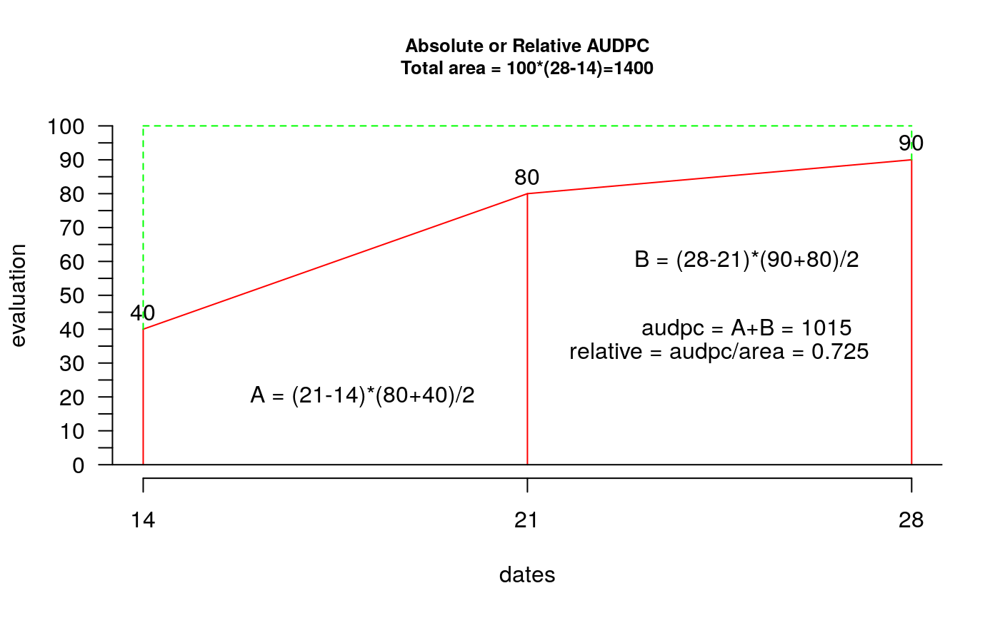
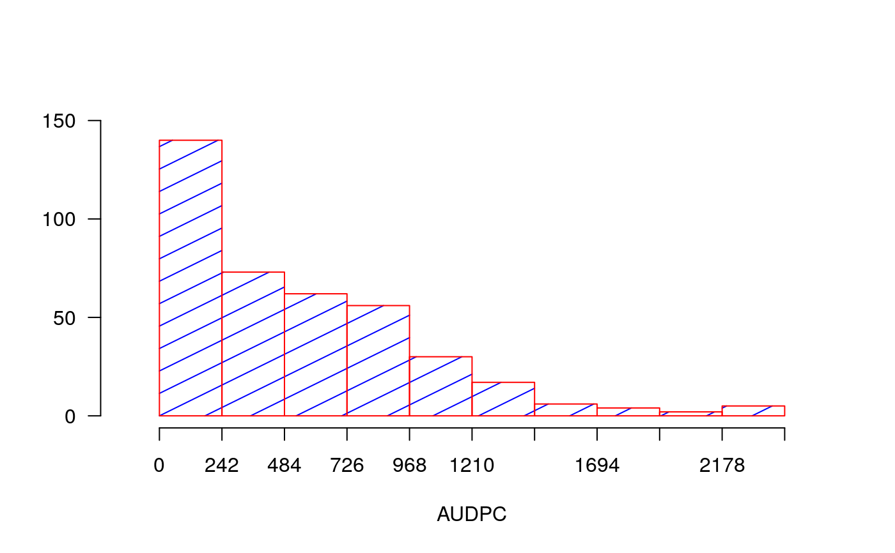
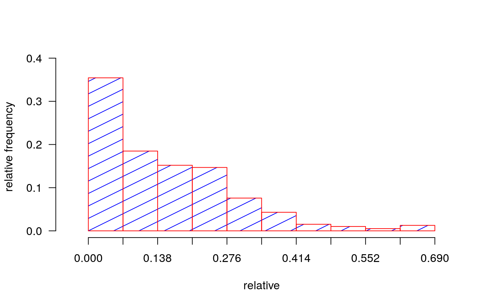

Area Under Disease Progress Curve. The AUDPC measures the disease throughout a period. The AUDPC is the area that is determined by the sum of trapezes under the curve.
AUDPC. For the illustration one considers three evaluations (14, 21 and 28 days) and percentage of damage in the plant 40, 80 and 90 (interval between dates of evaluation 7 days). AUDPC = 1045. The evaluations can be at different interval.
audpc(evaluation, dates, type = "absolute") # S3 method for default audpc(evaluation, dates, type = "absolute")
| evaluation | Table of data of the evaluations: Data frame |
|---|---|
| dates | Vector of dates corresponding to each evaluation |
| type | relative, absolute |
Vector with relative or absolute audpc.
Campbell, C. L., L. V. Madden. (1990): Introduction to Plant Disease Epidemiology. John Wiley & Sons, New York City.
library(agricolae) dates<-c(14,21,28) # days # example 1: evaluation - vector evaluation<-c(40,80,90) audpc(evaluation,dates)#> evaluation #> 1015# example 2: evaluation: dataframe nrow=1 evaluation<-data.frame(E1=40,E2=80,E3=90) # percentages plot(dates,evaluation,type="h",ylim=c(0,100),col="red",axes=FALSE)#> [1] 1015rm(evaluation, dates, absolute) # example 3: evaluation dataframe nrow>1 data(disease) dates<-c(1,2,3) # week evaluation<-disease[,c(4,5,6)] # It calculates audpc relative index <-audpc(evaluation, dates, type = "relative") # Correlation between the yield and audpc correlation(disease$yield, index, method="kendall")#> #> Kendall's rank correlation tau #> #> data: disease$yield and index #> z-norm = -3.326938 p-value = 0.0008780595 #> alternative hypothesis: true rho is not equal to 0 #> sample estimates: #> tau #> -0.5436832# example 4: days infile data(CIC) comas <- CIC$comas oxapampa <- CIC$oxapampa dcomas <- names(comas)[9:16] days<- as.numeric(substr(dcomas,2,3)) AUDPC<- audpc(comas[,9:16],days) relative<-audpc(comas[,9:16],days,type = "relative") h1<-graph.freq(AUDPC,border="red",density=4,col="blue")table.freq(h1) h2<-graph.freq(relative,border="red",density=4,col="blue", frequency=2, ylab="relative frequency")